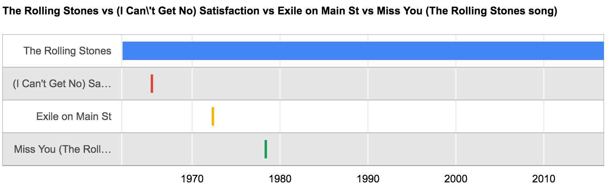

Create timeline charts dynamically, using URL
Content comes from Wikipedia (see : https://www.wikidata.org, gentle).
Create a chart, use URL :
http://timeline-chart.herokuapp.com?q=<wikipedia_name1>|<wikipedia_name2>|...
Example :
http://timeline-chart.herokuapp.com?q=The_Rolling_Stones|(I_Can't_Get_No)_Satisfaction|Exile_on_Main_St|Miss_You_(The_Rolling_Stones_song)
Will create this chart :

Colors are configurable using the parameter
colors
(html colors' codes separated by a '|') :
http://timeline-chart.herokuapp.com?q=The_Rolling_Stones|The_Beatles|The_Who&colors=cbb69d|603913
Github